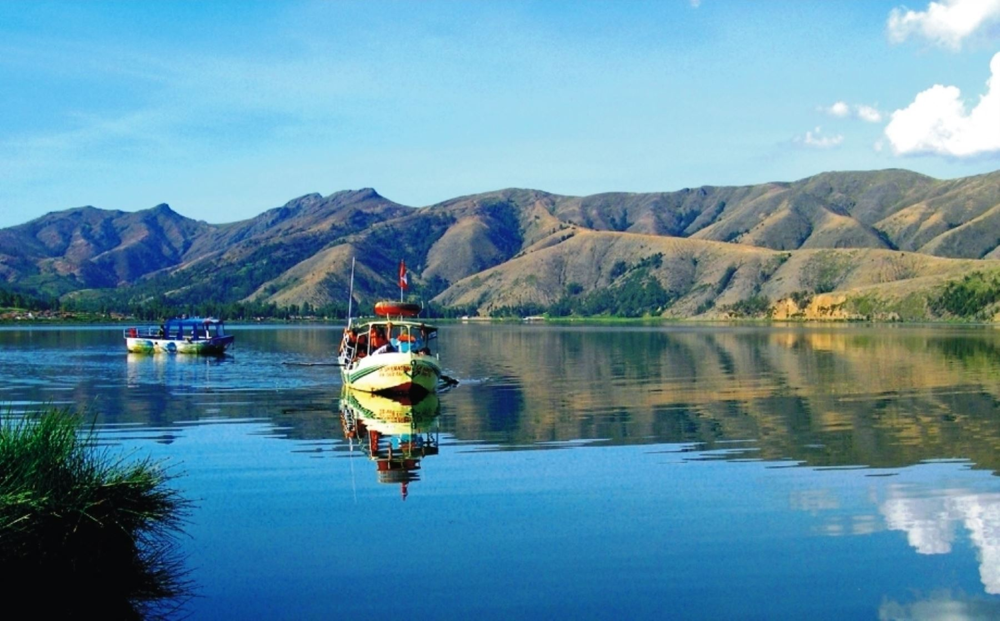
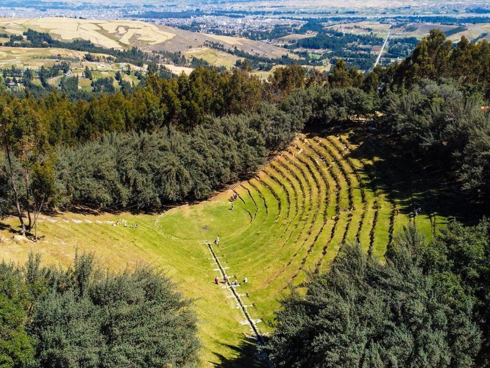
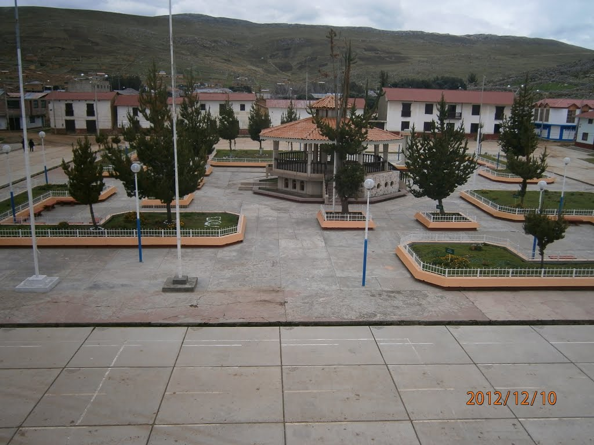

🌱 El Latido de los Andes
☰
Inicio
Destinos
Contacto
Explora Junín de forma sostenible
Turismo regenerativo que cuida la naturaleza
Explorar

Laguna de Paca

Bosque Dorado

Localidad de Ondores
Laguna de Paca
Bosque Dorado
Localidad de Ondores